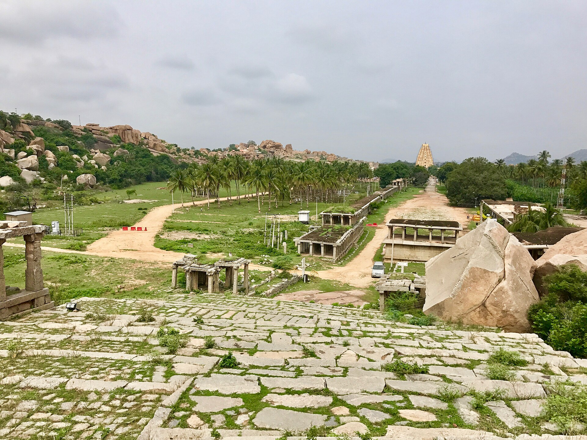
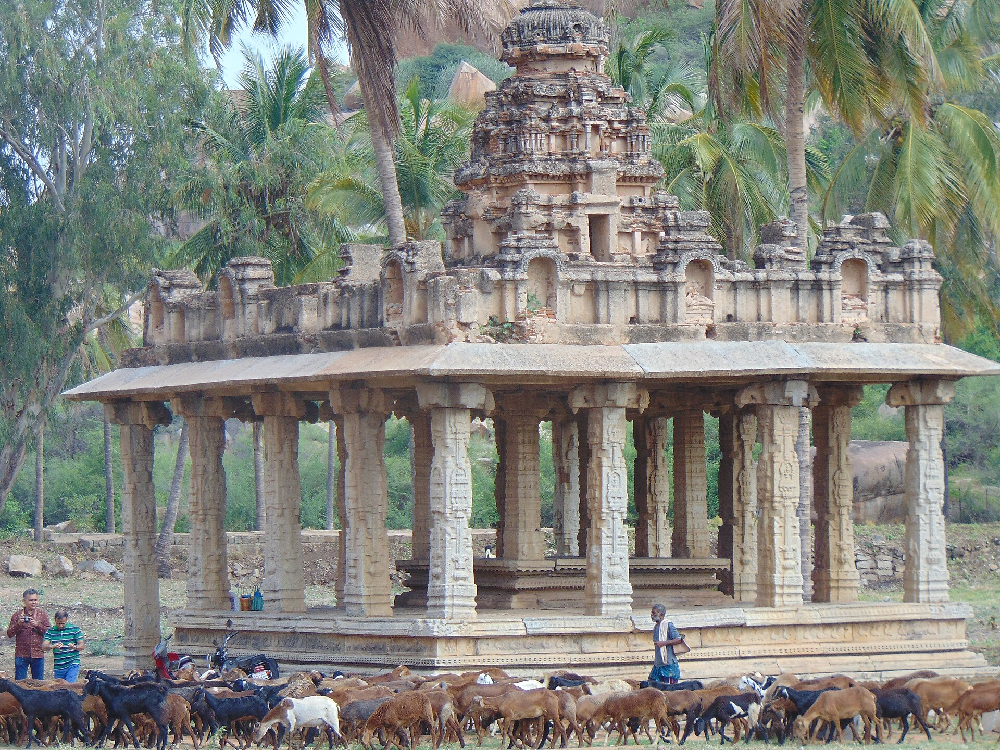
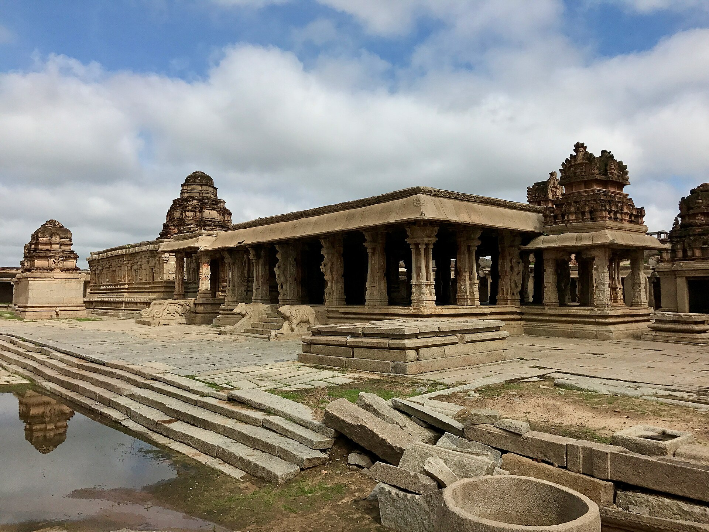
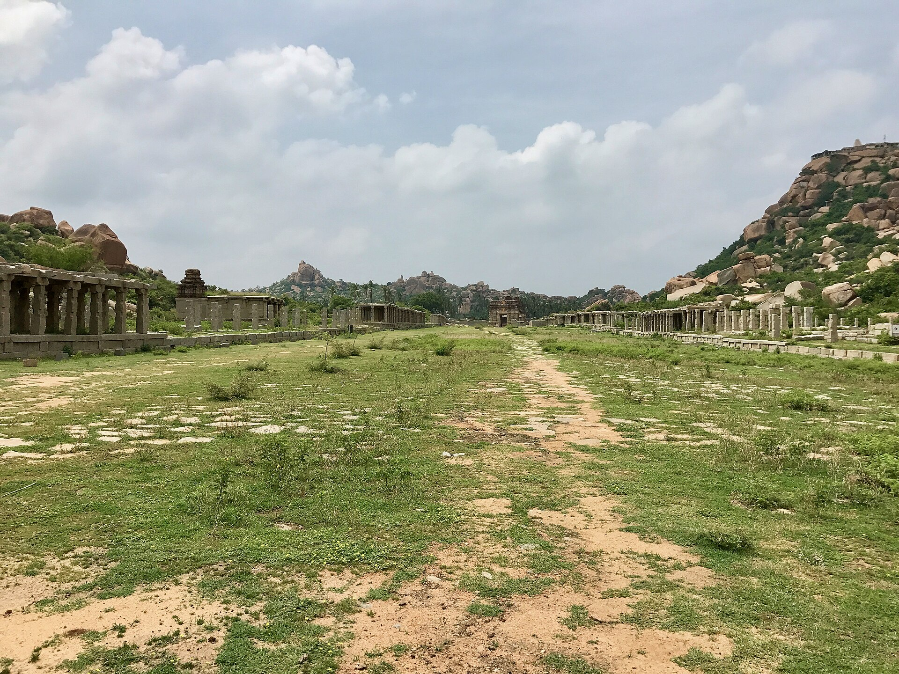
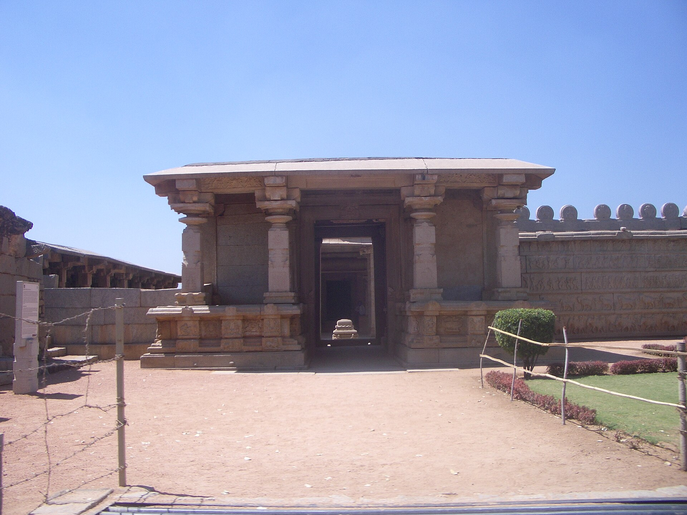
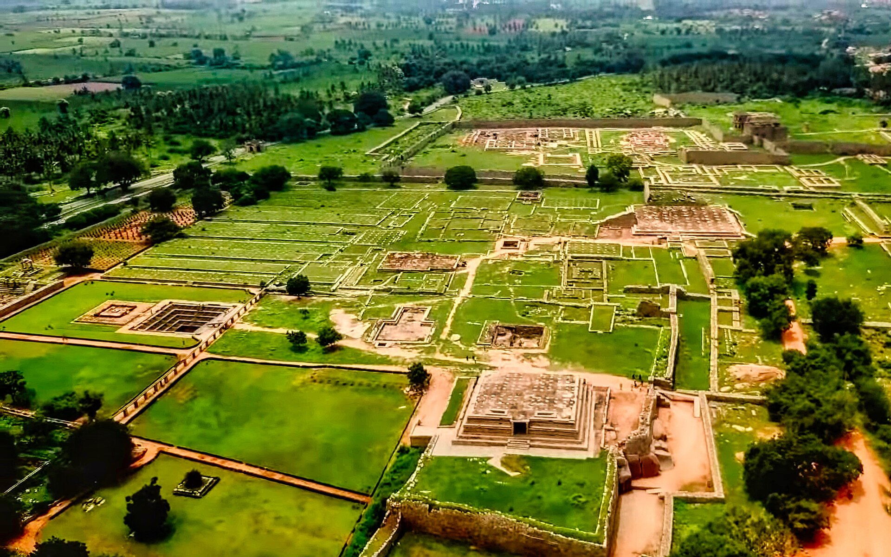
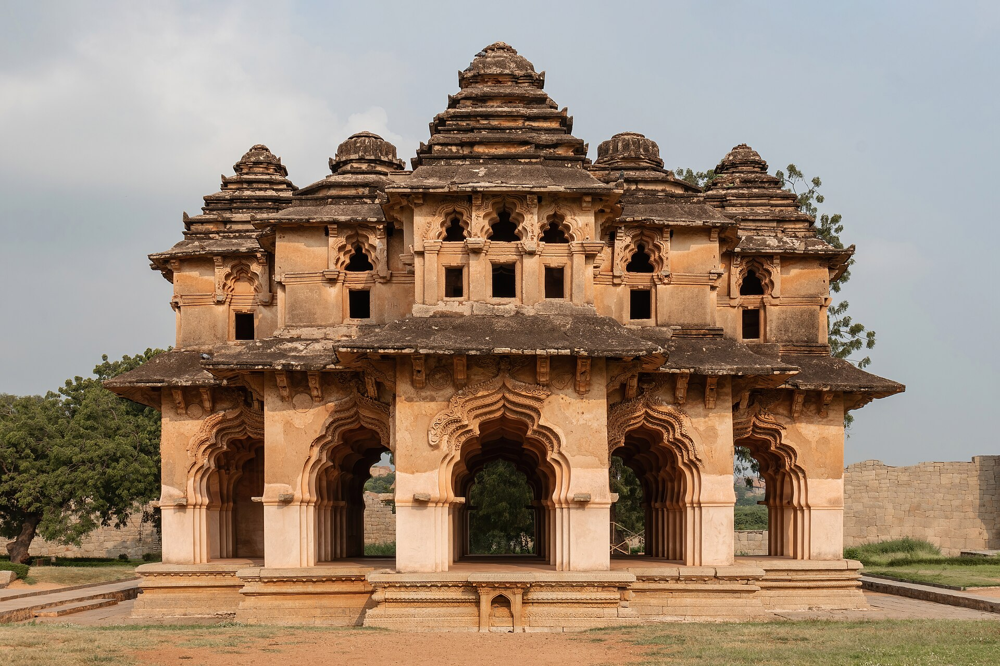
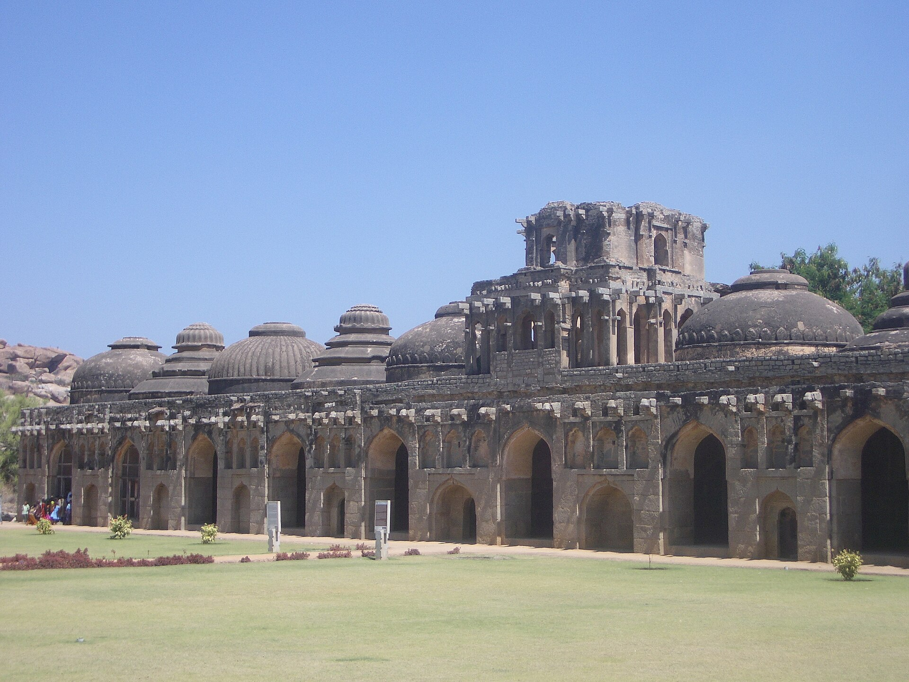

Virupaksha temple
11th c., extended 1509
The anchor of the whole site and the only temple here never to have fallen out of worship — its fifty-metre gopura rebuilt by Krishnadevaraya, its goddess Pampa older than the empire by centuries.
5 · Hampi — the city of victory
Founded 1336 · sacked 1565 · never reoccupied
For two centuries this was, by the reckoning of everyone who saw it, one of the largest and richest cities on earth — a granite metropolis in a boulder gorge, with jewels sold openly in the street, seven rings of walls, and an empire behind it running from the Krishna to Cape Comorin. It was destroyed in an afternoon and never lived in again.
The story attached to this ground is about a hare that refused to run. Hunting here, the brothers watched their own hounds put one up and then back away from it. The sage Vidyaranya read it as a sign that the ground itself gave courage to the weak: build here, and no enemy will take your capital.
The site is a natural fortress of granite hills and river, on ground already sacred as the Kishkindha of the Ramayana, where Rama met Hanuman and Sugriva. Inscriptions from the eleventh century onward call it so. The river's older name is Pampa, and the goddess Pampa's marriage to Shiva as Virupaksha on Hemakuta hill is the founding sacred myth of the place — still celebrated annually, in a temple that has never once fallen out of worship.
The city was called first Vidyanagara, the city of learning, and then Vijayanagara, the city of victory. It was founded facing north, against the Sultanate, and for two and a half centuries it absorbed the shock of every invasion from the plateau.
One school makes them Telugu officers of Kakatiya Warangal (or of Kampili), captured when the Tughluqs took the city, taken to Delhi, converted to Islam, sent back south as governors, and then reconverted by Vidyaranya and declaring independence.
The other makes them Kannada warriors in Hoysala or Kampili service, already at home on the Tungabhadra, with the early inscriptions showing them as loyal Hoysala feudatories into the 1340s. The widow of Ballala III is recorded as taking part in Harihara's coronation — continuity, not rupture.
The capture-and-conversion story appears only in the Persian chronicles, has no epigraphic corroboration, and may postdate the events by as much as two hundred years, which would make it a foundation myth deriving Vijayanagara's authority from the Sultanate it fought. Vidyaranya has a worse problem: he became head of Sringeri around 1380, four decades after 1336, so he cannot have done what tradition says he did.
What is not in dispute: the empire was founded in the 1330s, on ground the Tughluqs had just cleared by destroying the Kampili kingdom, by men who had been inside the Sultanate's system, which is exactly why they knew how to fight it.
Abdur Razzaq Samarqandi arrived in April 1443 as ambassador of the Timurid Shah Rukh and gave up in the first paragraph: the pupil of the eye, he wrote, has never seen a place like it. His description is unusually structural for a medieval traveller: he works inward ring by ring, noting where the ploughed land stops and the shopfronts begin, which is roughly how an archaeologist would map the site five centuries later. He described bazaars always stocked with fresh flowers, craftsmen quartered by trade, streams running in cut stone channels, a mint whose chambers held masses of molten gold, and a police office of twelve thousand men.
What struck him hardest was ordinary wealth: even market workers wore jewels and gilt in their ears, on their necks, arms, wrists and fingers. And the jewellers, he noted, sold pearls, rubies, emeralds and diamonds publicly in the open bazaar.
Domingo Paes, a Portuguese horse trader, walked the city about 1520 and thought it as large as Rome and very beautiful to look at, with groves and orchards inside the walls, water running through the middle of it, and a hundred thousand houses. It was, he wrote, the best-provided city in the world.
| Nicolo de' Conti, c. 1420 | Circuit of 60 miles; 90,000 men fit to bear arms |
| Abdur Razzaq, 1443 | Seven walls; bazaars long and broad, always in flower |
| Duarte Barbosa, c. 1514 | 900 elephants, 20,000 horses; free trade for every faith |
| Domingo Paes, c. 1520 | 100,000 houses; 'as large as Rome' |
| Fernão Nunes, 1535–37 | 13,000 horses of Ormuz bought every year |
| Archaeology | Urban core c. 25 km²; metropolitan region c. 650 km² |
Medieval travel figures are elastic. Conti's sixty-mile circuit is not a measurement, it is astonishment written down.
But survey has been kinder to these accounts than usual. The Vijayanagara Research Project and the Archaeological Survey have traced multiple defensive circuits, sixty reservoir embankments in the intensive survey area alone, aqueducts, cisterns, roads thirty to sixty metres wide, and an urban core of roughly twenty-five square kilometres inside a metropolitan region of six hundred and fifty.
The wealth is corroborated too, from a hostile source: the sultanates' own accounts of what they carried away in 1565.
Under him the empire reached its greatest extent, from the Krishna to Cape Comorin and sea to sea. He broke the Bijapur army at Raichur in 1520, subdued Orissa and took a Gajapati princess in marriage, and handled the newly arrived Portuguese as suppliers rather than as a threat — buying their Arabian horses at extraordinary prices, because the Deccan could not breed cavalry mounts and both sides had to import them.
He was also a Telugu poet, and kept eight of them at court — the ashtadiggajas, the elephants of the eight directions. His own Amuktamalyada is a devotional poem and a manual of statecraft at once: tax lightly, protect merchants, dig tanks and canals, lease land cheaply to the poor, and you will get both wealth and religious merit.
The oddest fact about his reign is the silence around it. The Persian chroniclers, who tracked Vijayanagara's affairs closely for two centuries, hardly acknowledge him and never write his name, while his own inscriptions and the Portuguese who traded with him show a man who ran the entire south for twenty years. He visited Tirumala seven times and left 229 inscriptions there.
| The gold coin | The varaha or pagoda, 3.4 g — Vishnu's boar |
| Why that weight | Matched to the Venetian sequin and ducat, for foreign trade |
| Small change | 1 varaha = 16 silver tara; 1 tara = 3 copper jital |
| Assay | Mints kept touchstones; coin was accepted only after testing |
| Horses | About 13,000 a year through Portuguese Goa |
| Ports | Roughly 300, on both coasts; goods reaching Venice |
For twenty years the aged regent Rama Raya had played the sultanates against one another, backing Ahmadnagar against Bijapur and then reversing, hiring their soldiers and humiliating their envoys. The one contingency he had discounted was the four of them agreeing. In 1565 Bijapur, Ahmadnagar, Golconda and Bidar did exactly that, and married into one another to make it hold.
The armies met on 23 January 1565 between the villages of Rakshasi and Tangadi, near Talikota on the Krishna — the battle is named after a town it was not fought at. Rama Raya, past eighty, directed it from a jewelled litter with heaps of coin beside him to reward his men. His litter went down; he was captured and beheaded on the field; his head was raised on a spear, and the army dissolved on sight of it.
The city was not defended. The sultans' armies stayed months, five or six by the usual reckoning, and carried off what they could. The Venetian Cesare Federici walked through it in 1567. The houses were still standing. There was nothing living in the streets but animals.
And the victory destroyed the victors' own security. The one power that had forced them to cooperate was gone. Within twenty-five years the Mughals were at their northern gate.
The traditional explanation is defection: two Muslim commanders in Vijayanagara's service, the Gilani brothers, changing sides at the critical moment. Federici, writing two years later, reports it as fact; some modern scholars accept it, others read it as a rationalisation invented after a shattering defeat.
The now-dominant explanation is technological. The sultanates handled gunpowder artillery as an integrated arm; Vijayanagara had not absorbed it. Rama Raya commanding from a litter in the middle of the line made him both conspicuous and slow.
Casualty figures, the familiar hundred thousand, are chronicle arithmetic. Even the length of the battle is disputed, with accounts ranging from hours to days. What is certain is that the empire's field army ceased to exist.
Tirumala Deva Raya founded a new line and moved the capital to Penukonda, then further south, facing succession disputes and Telugu Nayaka houses with no interest in a revived central authority. Royal patronage of the site simply stopped.
Modern survey suggests the destruction was concentrated: heavy in the Royal Centre, the sites of sovereignty, and far lighter in the sacred and outlying zones. The sultans burned the seat of the state rather than the whole city. But without the state there was no reason for anyone to stay, and the site emptied.
It is also worth saying plainly that the older framing of Talikota as a Hindu-versus-Muslim civilisational catastrophe has been rejected by most current historians: Vijayanagara employed Muslim troops and borrowed Deccani courtly architecture wholesale, the sultanates fought each other as readily as they fought it, and the causes were political and technological.
Colin Mackenzie, later the first Surveyor General of India, reached the abandoned ruins in 1799–1800, collected manuscripts, commissioned watercolours and made the first map. Alexander Greenlaw photographed the site in 1856 — sixty calotypes that remain the best record of its mid-nineteenth-century state. Robert Sewell's A Forgotten Empire of 1900 translated Paes and Nunes and made the place internationally famous.
From 1980 the Vijayanagara Research Project under John Fritz and George Michell did something different: surface archaeology, systematically drawing, photographing and mapping the standing city rather than digging it. The Archaeological Survey excavated the Royal Enclosure and the great stepped tank beside the Mahanavami platform.
It became a World Heritage Site in 1986, and spent 1999 to 2006 on the endangered list because of road and bridge construction.
The whole gorge is mapped onto the Ramayana. Anjanadri hill across the river is Hanuman's birthplace; Rishyamukha is where Sugriva sheltered from his brother Vali; a cave nearby is shown as the place Sugriva kept the jewels Sita dropped as she was carried away. Matanga and Malyavanta hills complete the circuit.
This is not decoration added later. Inscriptions call the site Kishkindha from 1059 onward — nearly three centuries before the city was founded. The empire chose a place that was already a story.
“The city of Bidjanagar is such that the pupil of the eye has never seen a place like it, and the ear of intelligence has never been informed that there existed anything to equal it in the world.”Abdur Razzaq Samarqandi, ambassador of Shah Rukh, 1443
The Tungabhadra runs along the north. The Sacred Centre lies on the river bank around Virupaksha; the Royal Centre, with its palaces and platforms, sits two to three kilometres south-east, connected by colonnaded bazaar streets.
11th c., extended 1509
The anchor of the whole site and the only temple here never to have fallen out of worship — its fifty-metre gopura rebuilt by Krishnadevaraya, its goddess Pampa older than the empire by centuries.

15th–16th c.
Seven hundred and fifty metres of colonnaded street running due east from the temple, ending at a monolithic Nandi. Abdur Razzaq found it stocked with fresh flowers every day of the year.

pre-imperial
A low granite dome south of Virupaksha carrying more than thirty small shrines with stepped pyramidal roofs — most of them older than the empire, from the Kampili period the Tughluqs destroyed.

1528
Six and a half metres of Vishnu's man-lion seated on the coils of Adishesha under a seven-hooded canopy, carved from one boulder. The Lakshmi who sat on his knee has broken away; her hand is still on his back.

1515
Built by Krishnadevaraya to mark the taking of Udayagiri, with its own bazaar street and ceremonial plaza in front of it. The image it was built for is now in a museum in Chennai.

1534
A north-facing Vishnu temple with a hundred-column hall, set in the saddle between two hills, and in front of it the Courtesans' Street, five hundred metres long and fifty wide.

15th–16th c.
The high point of the style: a kilometre of colonnaded market outside, and inside, piers ringed with slender colonnettes that ring at different pitches when struck.
16th c.
A shrine to Garuda cut as a processional car, its wheels carved to turn. It is on the fifty-rupee note, and it is the single most reproduced image in Indian archaeology.

early 15th c.
The royal family's private chapel. Its outer walls carry processional friezes of elephants, horses, soldiers and dancers, the Mahanavami parade in stone, and its inner walls a continuous Ramayana.

early 16th c.
Three ascending granite stages some eight metres high, the highest point of the Royal Enclosure, carved with marching elephants, camels, musicians and dancers. The king watched the nine-day state festival from a wooden pavilion on top, which burned in 1565.

16th c.
A two-storey pavilion on a Hindu mandala plan wrapped in Islamic cusped arches and vaults. Nobody knows what it was for, and its very existence is the argument against reading this empire as a wall against Islam.

16th c.
Eleven domed chambers in a row, alternating fluted and plain domes, the central one most ornate. Barbosa counted nine hundred elephants in the city; these housed the state's ceremonial ones.
16th c.
Thirty metres square, with a sunken pool fifteen metres across and nearly two deep, ringed by an arcaded Indo-Islamic verandah and once fed by aqueduct — probably a public bath rather than a royal one.